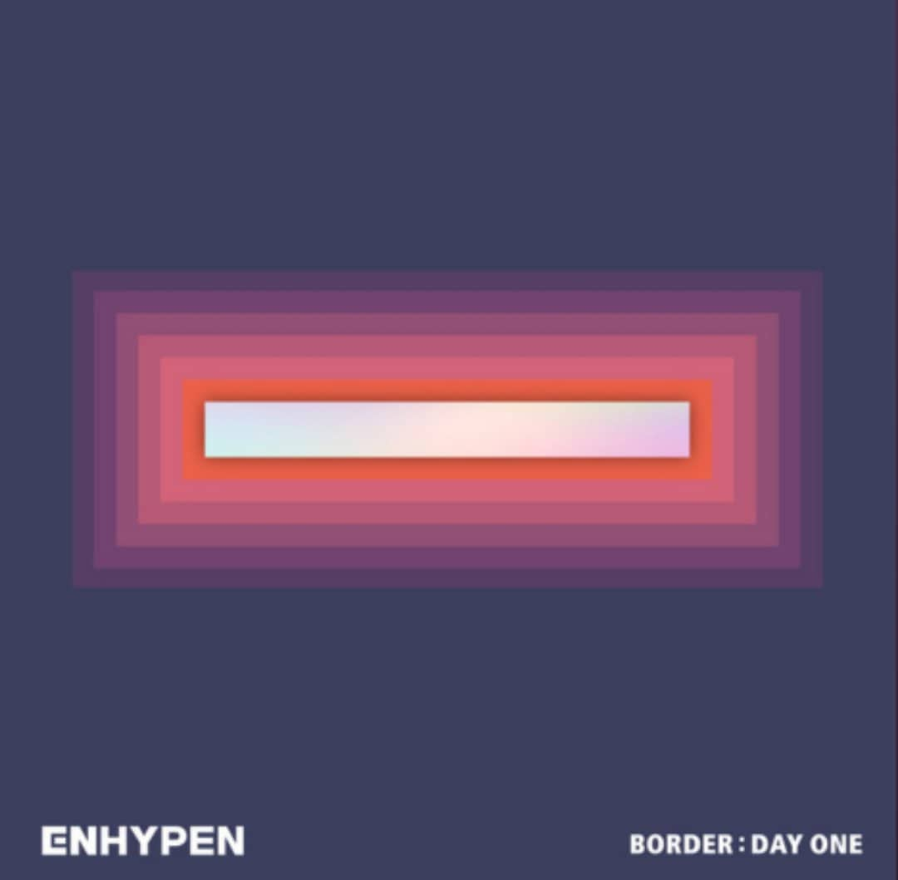
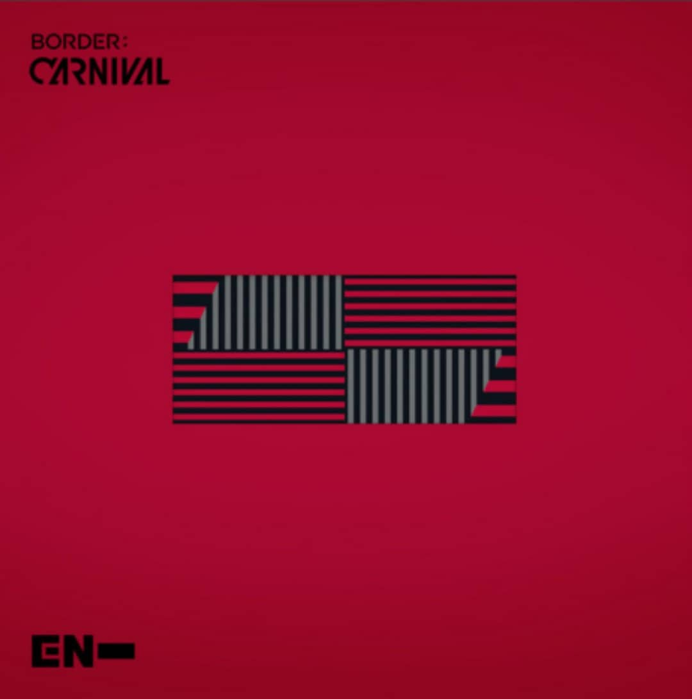
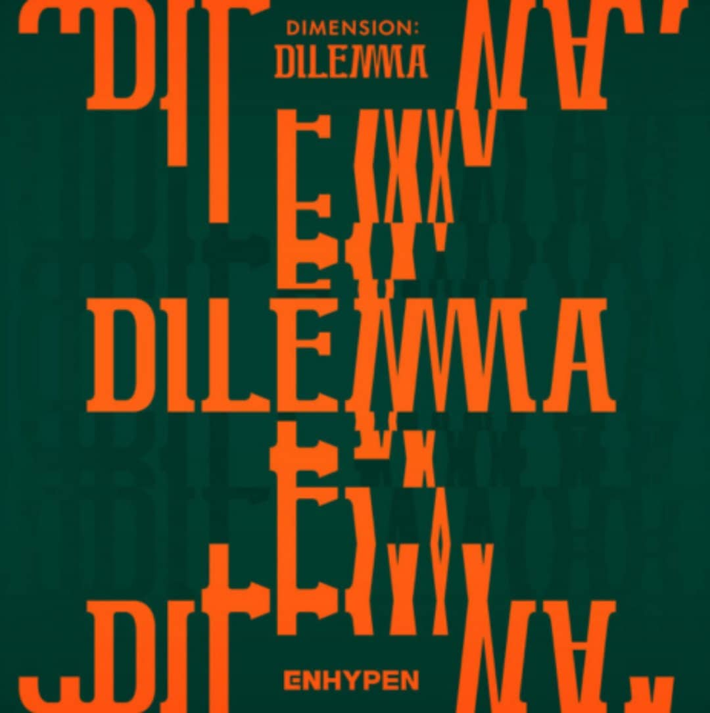
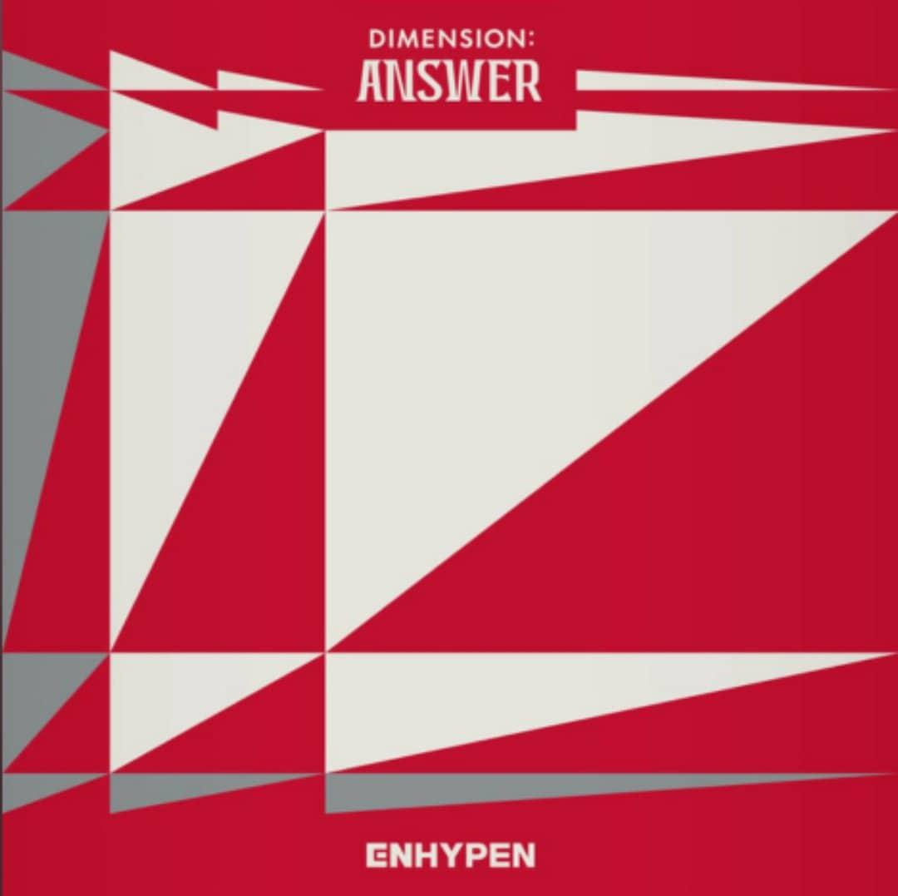
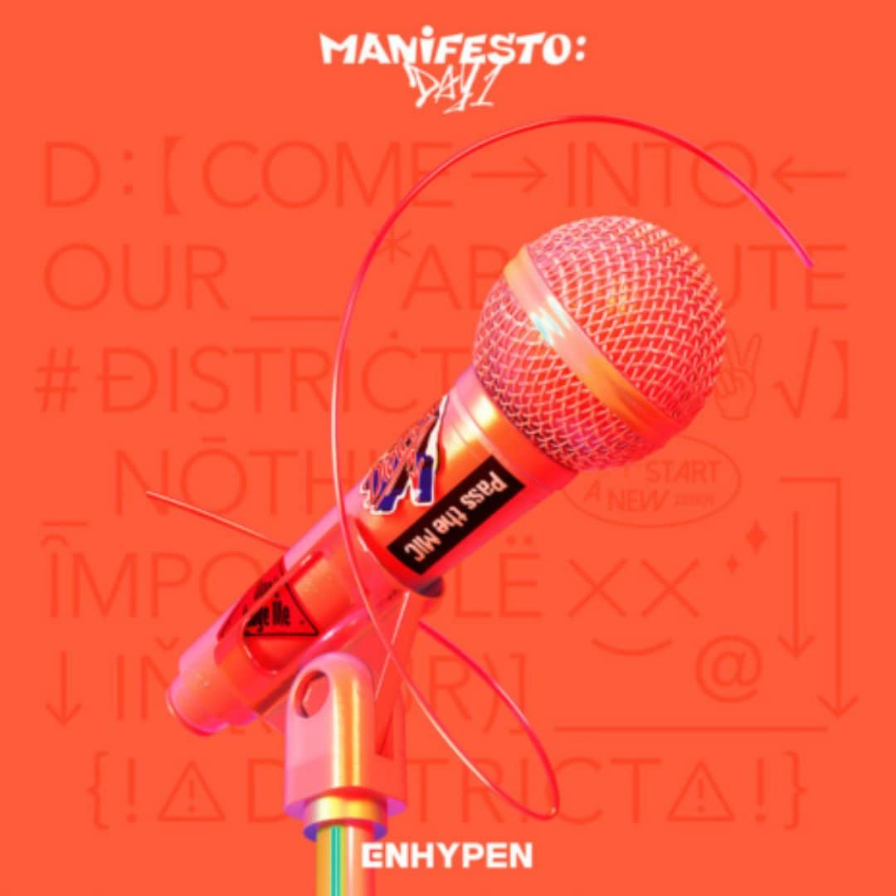

ENHYPEN debuted with their debut album called BORDER: DAY ONE on Novemeber 30, 2020. Their 2nd Mini Album, BORDER: CARNIVAL was the group's first comeback after almost 5 months (April 26, 2021) after their debut album was released. On October 21, 2021, ENHYPEN came back with their first ever FULL ALBUM entitled DIMENSION: DILEMMA which was then followed by a Full- Length Repackaged Album named DIMENSION: ANSWER on January 10, 2022. Their most recent comeback mini album called MANIFESTO: DAY 1 was released on July 4, 2022 after 6 months of the past Full Length Repackaged Album was released.
BORDER: DAY ONE
BORDER: CARNIVAL
DIMENSION: DILEMMA
DIMENSION: ANSWER
MANIFESTO: DAY 1
Copyright© 2022 KVLSumaya 9-Lithium